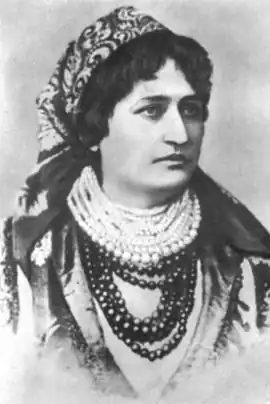

Наталія Іванівна Кобринська (дівоче прізвище Озаркевич) народилася 8 червня 1855 року в с. Белелуя Снятинського району Івано-Франківської області. Вона походила з висококультурної священичої родини Озаркевичів, яка здавна тягнулася до творчості.
Дід Наталії – Іван Озаркевич був визначним культурним діячем, меценатом, знаним у Галичині аматором театру, знавцем і шанувальником української творчості. Батько не тільки був священником, але й письменником. Його п’єси і переклади друкувалися в тогочасних альманахах.
Наталія належала до того покоління українських жінок, які не мали права навчатися у вузах і тому освіту здобула вдома. Своєю вчителькою вона називає просту селянку – няню, яка прищепила їй, трьом братам та молодшій сестрі любов до рідної землі, пісень, народної творчості. Перші знайомства Наталії Озаркевич починалися з книг, які вона змалку любила. Під керівництвом свого батька вона вивчала українську, російську, польську, німецьку та французьку мови. 1874 року Наталія вийшла заміж за молодого священника Теофіла Кобринського. Її обранець був не лише добрим душ пастирем, а й засновником української міщанської читальні і хору, займався збиранням фольклору. Після одруження життя Наталії пішло новим руслом. Юна дружина стала вірною помічницею в подорожах селами Прикарпаття, допомагала записувати пісні, колядки, перекази. Але на сьомому році подружнього життя важка хвороба звела зі світу Теофіла Кобринського. Після смерті чоловіка 26-літня вдова покинула Снятин і переселилася до батьків у Болехів. В 1882 році Наталія разом з батьком – послом державної ради – їде до Відня. Там вона познайомилась з Остапом Терлецьким – публіцистом, літературознавцем, який підтримав її морально і заохотив до літературної праці. В цей час з’являються перші оповідання Н. Кобринської – "Пані Шумінська" та "Задля кусника хліба" (1883), про які схвально відгукнувся І.Франко. Вдала спроба пера заохочує Н.Кобринську серйозно зайнятися літературною творчістю. Починається її творчий злет, який триватиме понад тридцять років, котрі вона прожила в Болехові. Н.Кобринська стає досить помітною постаттю у колі письменників і культурно-громадських діячів кінця ХІХ – початку ХХ століття. Свою літературну і суспільно-культурну діяльність вона присвячує питанням розкріпачення жіноцтва та рівноправності жінок з чоловіками в усіх сферах діяльності. Жіноча доля стала тією проблемою, якій Кобринська вирішила віддати свою енергію і талант. Саме вона стала організатором жіночого руху в Галичині. 7 жовтня 1884р. в Станіславові за її ініціативи зібралася група жінок, щоб обговорити статут майбутнього товариства. Тоді ж і було створено "Товариство руських женщин", головою якого стала Н.Кобринська. Вона своїми ідеями запалювала жінок міста, організовувала гуртки по вивченню практичних питань. Н.Кобринська поставила собі за мету впливати на розвиток жіночого руху через літературу. Друкувала твори жіночого пера в альманахах "Перший вінок" та "Наша доля". На формування естетичних та художніх поглядів Н.Кобринської особливий вплив справили І.Франко, М.Павлик, О.Терлецький. Зокрема І.Франко був редактором альманаху, опікувався його друком, рекомендував твори. В цей час виходять основні збірки письменниці – "Дух часу" (1898), "Казки" (1904), "Ядзя і Катруся" (1904) та інші оповідання. У своїх творах вона відображає трагізм жіночої долі, її залежність від моралі, а також зображує зубожіле галицьке село і багатий панський двір. У серпні 1899р. здійснилася давня мрія Н.Кобринської побувати "на Великій Україні". Зі своєю подругою О.Кобилянською вона відвідала Київ. Тут вона зустрілася з відомими діячами української культури М.Старицьким, І.Нечуй-Левицьким, М.Коцюбинським, Б.Грінченком. Радісні враження від цієї мандрівки передані у нарисах "У І. Нечуя-Левицького" та "Із подорожі по Україні". Перша світова війна безпосередньо втрутилась в життя письменниці. В 1915р. Н.Кобринську звинуватили в шпигунстві на користь Росії і заарештували. Якби не зусилля адвоката, відомого українського письменника А.Чайковського, закінчила б вона свій шлях у австрійському концтаборі. У 1918р. Н.Кобринська підготувала збірку "Воєнні новели", до якої ввійшли твори "Кінь", "Полишений", "На цвинтарі", "Свічка горить", "Брати", "Каліка". В останні роки життя письменниця дуже бідувала, жила в голоді і злиднях. Повертаючись зі Львова, Н.Кобринська в дорозі заразилася тифом і померла 22 січня 1920 року. Тихо, спокійно лягла в болехівську землю, сказавши свій заповіт: "Мене вже серце не болить…"